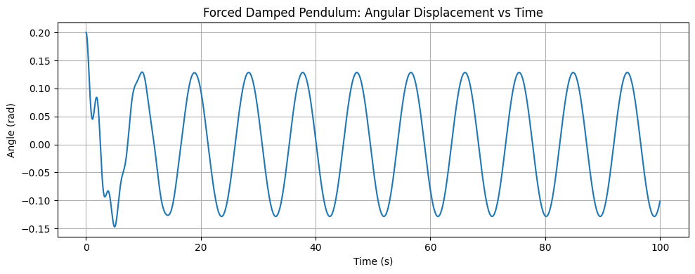

Problem 2
Investigating the Dynamics of a Forced Damped Pendulum
1. Theoretical Foundation
The forced damped pendulum is a nonlinear oscillator that exhibits rich dynamical behavior. It is modeled by the second-order nonlinear differential equation:
where:
- \(\theta(t)\): Angular displacement (radians)
- \(b\): Damping coefficient
- \(g\): Gravitational acceleration
- \(L\): Length of the pendulum
- \(A\): Amplitude of the driving force
- \(\omega\): Frequency of the driving force
This equation combines restoring force (\(\sin\theta\)), linear damping (\(b \, d\theta/dt\)), and a periodic driving force (\(A \cos(\omega t)\)).
1.1 Linearization for Small Angles
For small oscillations, where \(\theta \ll 1\), we can use the approximation:
The equation becomes:
This is the classic linear driven damped harmonic oscillator equation.
1.2 Resonance Behavior
In steady-state, the solution for \(\theta(t)\) takes the form:
where:
- \(\Theta\): Amplitude of oscillation
- \(\delta\): Phase shift
The amplitude is given by:
This amplitude is maximized when \(\omega \approx \sqrt{g/L}\), the natural frequency of the undamped pendulum, i.e., resonance occurs when the driving frequency matches the natural frequency.
2. Analysis of Dynamics
Unlike the linear approximation, the full nonlinear equation (with \(\sin\theta\) intact) exhibits complex behavior including:
- Periodic motion
- Quasiperiodic motion
- Chaotic behavior
These depend sensitively on parameters \(A\), \(b\), and \(\omega\).
2.1 Parameter Effects
- Damping (\(b\)): High damping suppresses motion; low damping allows oscillations and chaos.
- Driving Amplitude (\(A\)): Larger \(A\) can push the system into chaos.
- Driving Frequency (\(\omega\)): Influences resonance and period-doubling bifurcations.
2.2 Chaos and Nonlinearity
For sufficiently large \(A\) and small \(b\), the motion becomes unpredictable. Small changes in initial conditions result in drastically different outcomes—a hallmark of chaos.
- Phase diagrams show the evolution of \((\theta, \dot{\theta})\).
- Poincaré sections sample the system at regular intervals (e.g., each period \(T = 2\pi/\omega\)).
- Bifurcation diagrams show how the long-term behavior changes with \(A\) or \(\omega\).
3. Practical Applications
The forced damped pendulum is a model for many real systems:
- Energy harvesting: Devices that convert mechanical vibration into electrical energy.
- Mechanical systems: Bridges and buildings under wind or seismic driving.
- Electrical analogs: Driven RLC circuits exhibit identical mathematical behavior.
- Biological systems: Models of cardiac rhythms and walking gait.
4. Computational Implementation
To simulate the full nonlinear dynamics, we solve the second-order ODE numerically using the Runge-Kutta method.
4.1 Python Code
import numpy as np
import matplotlib.pyplot as plt
from scipy.integrate import solve_ivp
# Parameters
g = 9.81 # gravity (m/s^2)
L = 1.0 # length of pendulum (m)
b = 0.5 # damping coefficient
A = 1.2 # driving amplitude
omega = 2/3 # driving frequency
# Time span
t_span = (0, 100)
t_eval = np.linspace(*t_span, 5000)
# ODE function
def pendulum(t, y):
theta, omega_theta = y
dtheta_dt = omega_theta
domega_dt = -b * omega_theta - (g/L) * np.sin(theta) + A * np.cos(omega * t)
return [dtheta_dt, domega_dt]
# Initial conditions
theta0 = 0.2
omega0 = 0.0
sol = solve_ivp(pendulum, t_span, [theta0, omega0], t_eval=t_eval)
# Plot time series
plt.figure(figsize=(10, 4))
plt.plot(sol.t, sol.y[0])
plt.title("Forced Damped Pendulum: Angular Displacement vs Time")
plt.xlabel("Time (s)")
plt.ylabel("Angle (rad)")
plt.grid(True)
plt.tight_layout()
plt.show()
